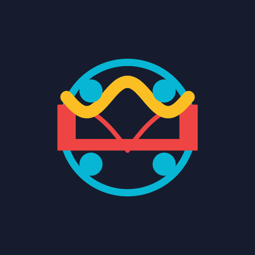
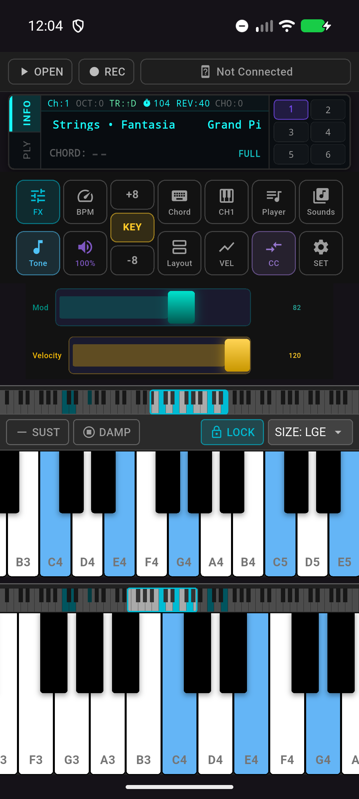
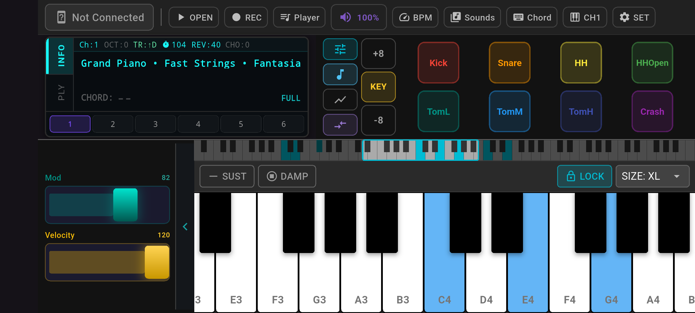
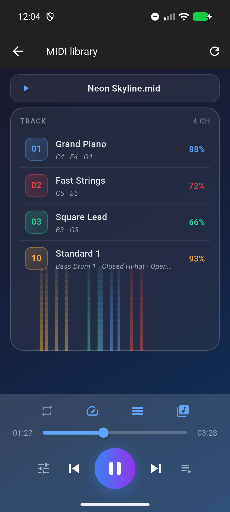
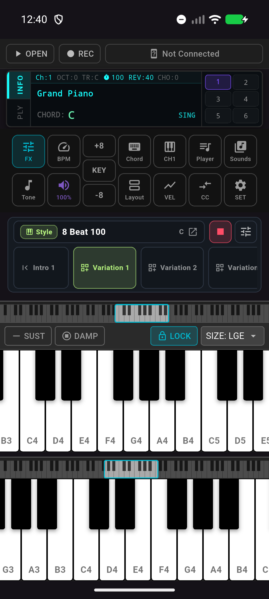
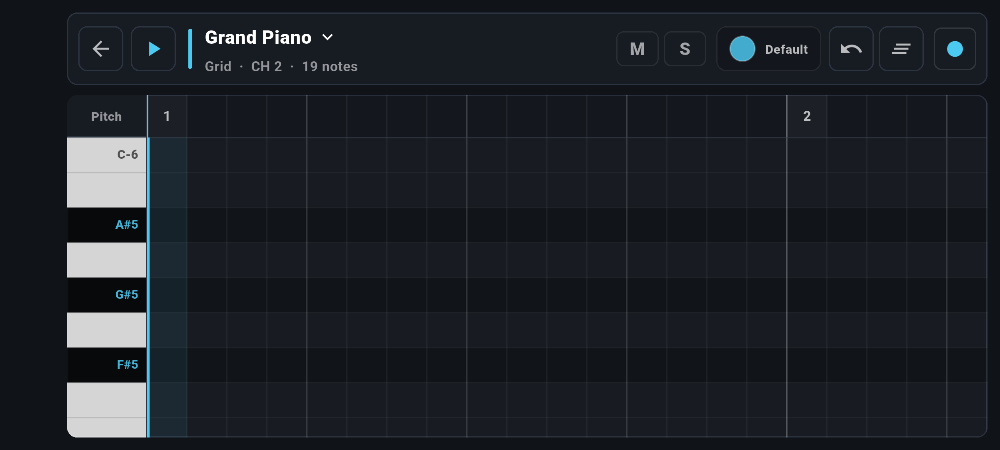

MIDI connections
Use Bluetooth MIDI, USB MIDI, virtual MIDI routing, and network MIDI sessions where your platform supports them.

SynthBridgeMIDI synth, looper and Cloud resources
Connect a keyboard, pad controller or another MIDI app, load SF2/SF3 sounds, and perform with responsive mobile controls.
Built for mobile music making
Use Bluetooth MIDI, USB MIDI, virtual MIDI routing, and network MIDI sessions where your platform supports them.
Route MIDI between controllers, apps, channels, and sounds so SynthBridge can sit at the center of a compact mobile rig.
Load SF2/SF3 libraries, keep the built-in GeneralUser-GS set ready, and tune per-channel sound, pan, volume, reverb, and chorus.
Play with multi-touch keys, dual keyboard layouts, programmable drum pads, pitch bend, modulation, transpose, and velocity curves.
Open standard MIDI files, manage a local song library, practice with backing parts, and export performance data when an idea is ready.
Capture loop ideas, build sections, use Style accompaniment, and practice with chord recognition and single-finger chord assist.
Live-ready workflow
Move from controller setup to sound, MIDI playback, routing, accompaniment, and loop capture in one mobile live workflow.

Start playing
The main workspace keeps connection status, presets, drum pads, keys, and live controls within reach, so practice can start without a long setup ritual.

Hands-on control
Landscape mode gives controllers, pads, modulation, velocity, and a wider keyboard more room, making the screen feel closer to a hardware performance surface.

Practice with MIDI files
The MIDI player turns local songs into a playable practice session, with visible tracks, transport controls, and instrument parts that stay connected to the synth engine.
MIDI routing
Bring BLE, USB, RTP-MIDI, or virtual MIDI into one routing layer, then send each controller or app to the channel, sound, or output that matches the moment.

Build accompaniment
Style accompaniment and chord assist help turn a short idea into a playable backing flow while the keyboard, pads, and synth controls remain available.

Capture ideas
Use the MIDI Looper to record parts, organize sections, and keep a groove moving while you refine the performance instead of starting over.
A compact live setup
Pair a BLE controller, plug in USB MIDI, or route MIDI from another app.
Choose built-in sounds, import SoundFonts, or open Cloud resources.
Perform with keys, pads, presets, effects, transpose, metronome, and MIDI CC.
Save ideas as audio or MIDI and keep your practice library moving.
Available on iOS and Android